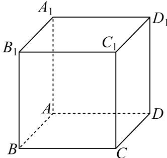
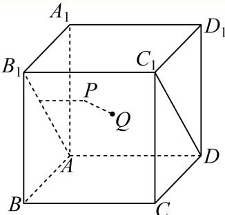
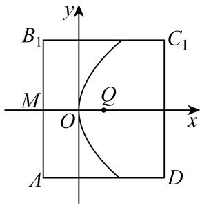
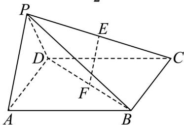
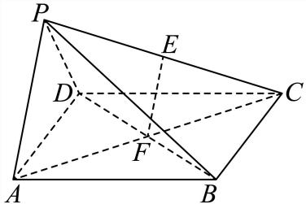
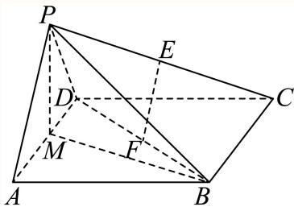
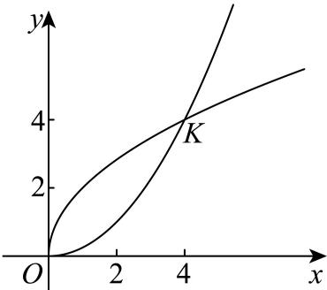
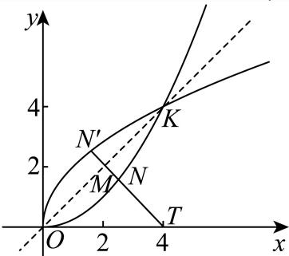
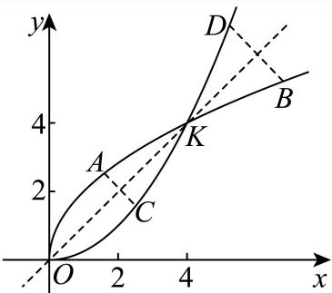

01 【来源：闵行24一模·1】
查看所属专题已知集合 ，若 ，则实数 ______。
答案与解析
答案
解析
因为 ，所以 ，解得 。此时集合元素互异，符合题意。
整卷阅读 · 教师版 · 21 题
按来源题号排列；内容来自分类汇编，仍需回源核对。
没有找到匹配题目。
已知集合 ，若 ，则实数 ______。
因为 ，所以 ，解得 。此时集合元素互异，符合题意。
若 ，则 ______。
由诱导公式，。
若实数 满足 ，则 的最小值为______。
由 ，得 。当且仅当 时等号成立，故最小值为 。
已知 ，则 ______。
6
的展开式通项为 。含 的项对应 ，其系数为 。
已知圆锥的底面周长为 ，母线长为3，则该圆锥的侧面积为______。
6π
求出圆锥的底面半径，根据圆锥的侧面积公式，即可求得答案.
设圆锥的底面半径为r，则由圆锥的底面周长为4π，
可得
而母线长为3，则该圆锥的侧面积为
故答案为：6π
已知双曲线 的离心率为 ，则该双曲线的渐近线方程为______。
y = ±x
根据离心率公式和双曲线的 c的关系进行求解由题知： 双曲线的渐近线方程为y = ±x
故答案为y = ±x
本题考查双曲线渐近线的求法，解题时要熟练掌握双曲线的简单性质
若将函数 的图象向右平移 个单位长度后得到的图象对应函数为奇函数，则 ______。
右移后函数为 。
其为奇函数当且仅当 ，。
结合 ，唯一得到 。
已知 ，，数列 是公差为1的等差数列，若 的值最小，则 ______。
公差为 ，故 。于是 。所以当 时取得最小值。
今年中秋和国庆共有连续8天小长假，某单位安排甲、乙、丙三名员工值班，每天都需要有人值班。任选两名员工各值3天班，剩下的一名员工值2天班，且每名员工值班的日期都是连续的，则不同的安排方法数为______。
18
八天中三人轮值，三人的值班天数为 。先选值班两天的人，有 种；再确定三人的轮值顺序，有 种。故共有 种排法。
若平面上的三个单位向量 、、 满足 ，，则 的所有可能的值组成的集合为______。
不妨设 、、，其中 。
由 ，得 ；由 ，得 。
所以 。
而 ，对应可得 ，三值均可取得。
故所求集合为 。
已知数列 为无穷等比数列，若 ，则 的取值范围为______。
[2,+∞)
无穷等比级数收敛，故 ，且 ，即 。
于是 若 ，该值为2；若 ，则等于 ，取遍 。
所以总值域为 。
即使按等比数列约定排除 ，结论也不变。
已知点 在正方体 的表面上， 到三个平面 、、 中的两个平面的距离相等，且 到剩下一个平面的距离与 到此正方体的中心的距离相等，则满足条件的点 的个数为______。

6
把正方体置于 ，三个给定面为坐标面，中心为 。
先考虑到前两个坐标面的距离相等，即 。
到剩下面的距离等于到中心的距离，给出 当 时，，故 在立方体表面当且仅当 或 ，对应 ，共2点。
换成另外两组等距面可得其坐标排列，总共 个不同点。


已知 ，，则下列不等式中不一定成立的是（ ）。
A.
B.
C.
D.
C
由 ，两边同加 、同乘正数 ，分别得 、，所以 A、B 一定成立。
取 ，则 而 ，所以 C 不一定成立。
指数函数 严格递增，故 ，D 一定成立。
选 C。
某校读书节期间，共120名同学获奖（分金、银、铜三个等级），从中随机抽取24名同学参加交流会，若按高一、高二、高三分层随机抽样，则高一年级需抽取6人；若按获奖等级分层随机抽样，则金奖获得者需抽取4人。下列说法正确的是（ ）。
A. 高二和高三年级获奖同学共80人
B. 获奖同学中金奖所占比例一定最低
C. 获奖同学中金奖所占比例可能最高
D. 获金奖的同学可能都在高一年级
D
按抽样比例，高一获奖人数为 ，高二、高三合计90，故A错误。
金奖人数为 ，银、铜合计100，因此金奖不可能最多，C错误；但银奖或铜奖可以不足20人，故金奖未必最少，B错误。
20名金奖获得者完全可能全部属于30名高一获奖者，故D正确。
已知复数 在复平面内对应的点分别为 ，（ 为坐标原点），且 ，则对任意 ，下列选项中为定值的是（ ）。
A.
B.
C. 的周长
D. 的面积
A
因为 ，所以 。
将题设除以 ，令 ，得 。
其判别式 ，故 所以 ，即 为定值。
由于 随 变化， 可变，故三角形面积与 均非定值。
选 A。
已知函数 的导函数为 ，，且 在 上为严格增函数，关于下列两个命题的判断，说法正确的是（ ）。
① “”是“”的充要条件；
② “对任意 都有 ”是“ 在 上为严格增函数”的充要条件。
A. ①真命题；②假命题
B. ①假命题；②真命题
C. ①真命题；②真命题
D. ①假命题；②假命题
C
① 令 ，则 ，故 严格递增。于是 所以①正确。
② 必要性：若 严格递增，则任意 都有 。
充分性：假设任意 都有 。
若存在 使 ，则对 ，由拉格朗日中值定理有 因此 （），与 矛盾。
故 对所有实数成立。
再由 严格递增知其不可能在任何一点取 （否则左侧导数为负），所以 ，从而 严格递增。
②也正确，故选 C。
如图，在四棱锥 中，底面 是边长为 的正方形，侧面 底面 ，且 ，设 分别为 的中点。

（1）证明：直线 平面 ；
（2）求直线 与平面 所成的角的正切值。
（1）证明见解析；（2）。
（1）连接 。
正方形对角线互相平分，故 是 中点； 是 中点，所以 是 的中位线，。
又 平面 ， 平面 ，故 平面 。
（2）取 中点 ，连接 。
由 ，得 ；又平面 平面 ，两平面交线为 ，所以 平面 。
因此 是 在底面上的射影，所求角为 。
由 、，得 ，故 ，。
底面为正方形，。
于是


在 中，角 所对边的边长分别为 ，且 。
（1）若 ，，求 的值；
（2）若 为锐角三角形，求 的取值范围。
（1）。余弦定理给出 ，故 。
（2）正弦定理把条件化为 。
利用 ，得 。
锐角三角形中 ，正弦严格递增，故 ，。
三个角都锐要求 ；反之此范围都可组成符合条件的锐角三角形。
因此 。
2023年9月23日至10月8日，第19届亚运会在杭州成功举办，杭州亚运会的志愿者被称为“小青荷”。某运动场馆内共有小青荷36名，其中男生12名，女生24名，这些小青荷中会说日语和会说韩语的人数统计如下：
| 语言 | 男生小青荷 | 女生小青荷 |
|---|---|---|
| 会说日语 | 8 | 12 |
| 会说韩语 |
其中 均为正整数，。
（1）从这36名小青荷中随机抽取两名作为某活动主持人，求抽取的两名小青荷中至少有一名会说日语的概率；
（2）从这些小青荷中随机抽取一名去接待外宾，用 表示事件“抽到的小青荷是男生”，用 表示事件“抽到的小青荷会说韩语”。试给出一组 的值，使得事件 与 相互独立，并说明理由。
m = 6, n = 12或 m = 7, n = 14或 m = 8, n = 16, 均符合题意.理由见解析
（1）会日语者20人，不会日语者16人。所求概率为
（2），，。
独立条件等价于 ，即 。
由整数限制， 可取 ，任给一组即可。
已知 ，曲线 、 的方程分别为 和 ， 与 在第一象限内相交于点 。

（1）若 ，求 的值；
（2）若 ，定点 的坐标为 ，动点 在直线 上，动点 在曲线 上，求 的最小值；
（3）已知点 ， 在曲线 上，点 关于直线 的对称点分别为 ，设 的最大值为 ， 的最大值为 ，若 ，求实数 的取值范围。
（1）；（2）；（3）。
（1）联立 与 ，非原点交点为 。所以 ，得 。
（2）两曲线互为反函数图像，关于直线 对称。
设 关于 的对称点为 ，则 ，且 在对称轴上，故 。
于是 ，等号要求 在线段 上。
时，设 ，则 当 、 时取得等号；此时 与 在 两侧，线段 与 相交，存在符合题意的 。
故最小值为 。
（3）设 、，其对称点为 、，其中 ，故 。
当 时取得最大值 。
另一方面， 因为 ，此式随 严格递增，故 时取得最大值 。
于是 。
令 ，条件 等价于 即 。
平方得


已知 ，。
（1）若1为函数 的驻点，求实数 的值；
（2）若 ，试问曲线 是否存在切线与直线 互相垂直？说明理由；
（3）若 ，是否存在等差数列 ，使得曲线 在点 处的切线与过两点 、 的直线互相平行？若存在，求出所有满足条件的等差数列；若不存在，说明理由。
（1）；（2）存在；（3）不存在。
（1）定义域为 ， 由 为驻点，得 ，所以 。
（2） 时，。
与直线 垂直的切线斜率为 ，故要求 ，等价于 。
连续，且 、，由零点存在定理，在 内存在 使 。
所以所求切线存在。
（3） 时，，。
若存在题设等差数列，则 ，从而 过两端点的割线斜率为 两线平行要求 ，即 。
令 ，则要求 。
但 故 ，矛盾。
所求等差数列不存在。